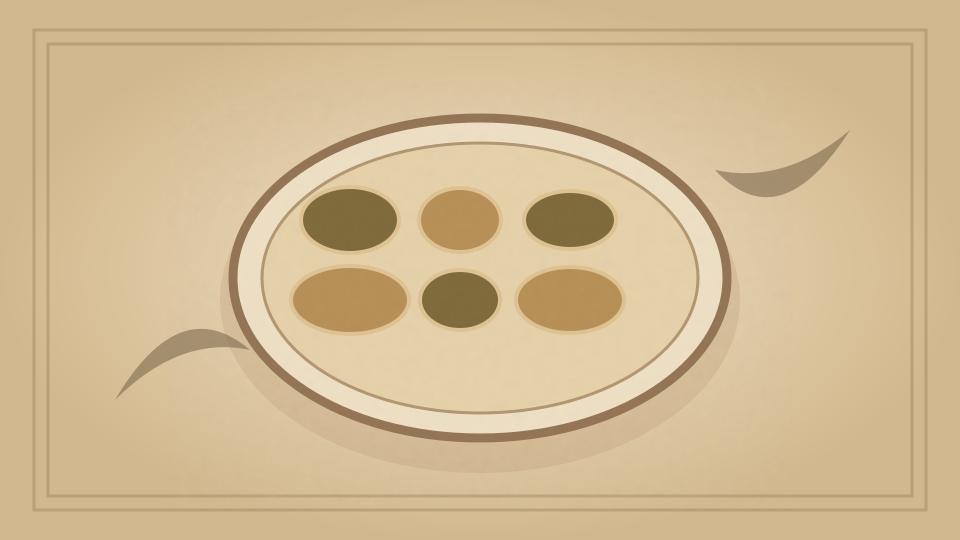

1910 · Fannie Merritt Farmer · BREAD AND BREAD MAKING
Buns
The Boston Cooking-School Cook Book

Historical Recipe
The following text is extracted from the 1910 edition, retaining historical terminology and quantities.
Original Ingredients & Directions
1 cup scalded milk
⅓ cup butter
⅓ cup sugar
1 yeast cake dissolved in
¼ cup lukewarm water
½ teaspoon salt
½ cup raisins stoned and cut in quarters
1 teaspoon extract lemon
Flour
Add one-half sugar and salt to milk; when lukewarm, add dissolved yeast cake and one and one-half cups flour; cover, and let rise until light; add butter, remaining sugar, raisins, lemon, and flour to make a dough; let rise, shape like biscuits, let rise again, and bake. If wanted glazed, brush over with beaten egg before baking.
Automatically extracted transcription; editorial verification pending. Historical instructions may not meet modern food-safety standards.